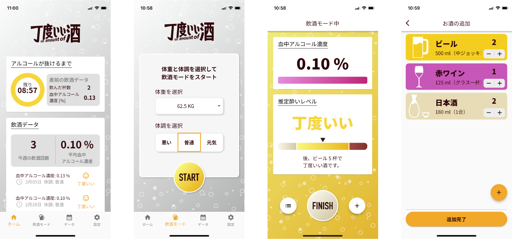

お酒を飲みすぎて後悔したことはないですか？
二日酔いで次の日をダメにしたり、他の参加者にうざ絡みをして後日後悔したり．．．
こういった失敗を重ねるたびに「もう飲まない」といってるにも関わらず同じ失敗を繰り返してしまう．．．
飲み過ぎず丁度いい量でお酒を楽しみたいと思う人は多いのではないでしょうか？
丁度いい酒（ちょうどいいっしゅ）は、ユーザの飲酒情報を学習し、飲酒中に丁度いい飲酒量を提示するアプリケーションです．
このアプリは、ユーザの「飲酒量」と「飲酒後の酔いの程度」をセットで記録・学習することでそのユーザに最適な飲酒量を提示します．
最適な飲酒量の計算は機械学習のアルゴリズムを応用しており、データ数が増えることでその効果が最適化されていきます！
使い方はとってもシンプルで、アプリの「飲酒モード」をスタートして飲んだお酒の情報を登録し、「飲酒モード」終了時にその時の酔いの程度（シラフ、丁度いい、飲み過ぎ／自分の感覚を入力）を選択するだけ． また、飲酒モード中は定期的に通知を発行し、ユーザーへ飲酒情報の記録を促します． 飲酒量が更新されるごとにアプリは逐次酔いの程度を計算し、酔って感覚が麻痺した自分の代わりにアプリが酔いの程度を教えてくれます．
本アプリの開発者である私も、お酒で何度も失敗しています．
飲み始める前は同じ失敗は繰り返さないぞと誓いますが、お酒が進むとバカになってしまい後悔することが何度もありました．
こうなるときにお酒をやめようと考える一方で、お酒には気分を晴れやかにしたり、仲間との語らいに深みを持たせたりなど筆舌に尽くし難い良さがあると思います．
お酒は美味しいし、簡易な非日常体験により人生をより楽しくできるスパイスでなのかもしれません．そんな素敵な機会を手放してしまうのは勿体無い．
是非この「丁度いい酒」と共に、お酒を飲んでも飲まれない楽しい飲酒体験を経験いただければ嬉しいです．